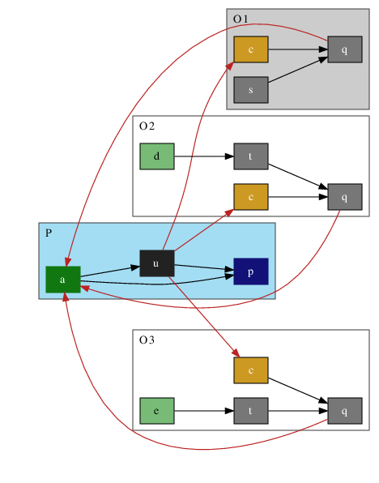

The code has been tested using SICStus Prolog (4.2+) on Linux. To use the optional visualization of solutions, you also need graphviz.
Download the source: abagraph.tar.gz. Unzip and untar it somewhere. Make sure the BASH abagraph script from 'scripts/' is somewhere in your PATH. Edit two variables at the top of the script to point to the right places.
If you've followed the directions for the script, above, you can do either:
where 'source.pl' is the name of a Prolog source file for the ABA framework. Alternatively, you can go to the 'code/' directory, load prolog, and just do:
Once abagraph is loaded, you can (re)load a source file (named 'source.pl') using:
To find a derivation for the sentence 's', do:
The solution will be printed on screen, and 'X' bound to an internal representation of it. Printed on screen is the Proponent argument graph (PGRAPH), the defence set (DEFENCE), the set of Opponent argument graphs (OPGRAPHS), and the culprits (CULPRITS).
Doing
prints some usage information.
Current values of options are displayed by:
To print the derivation steps during a call to sxdd/2, use:
To hide the derivation steps (default), use:
To output the solutions, as found, to a '.dot' file for visualization with graphviz, use:
To set not to print, use:
To use AB-dispute derivations, do:
To use GB-dispute derivations, do:
To change strategies, use:
StratList has the form: [T,OJ,PS,OS,PR].
turn choice (T):
opponent justification set choice:
sentence choice (proponent PS, and opponent OS):
proponent rule choice (PR):
The source file toni6_2.pl is included in the distribution. A query of 'derive(p, X)' writes the solution to screen:
| PGRAPH: | [a-[],p-[a,u],u-[a]] |
| DEFENCE: | [a] |
| OGRAPHS: | [q-[]-[c,q,s]-[c-[],q-[c,s],s-[]], |
| q-[d]-[c,q,t]-[c-[],d-[],q-[c,t],t-[d]], | |
| q-[e]-[c,q,t]-[c-[],e-[],q-[c,t],t-[e]]] | |
| CULPRITS: | [c] |
When visualized using graphviz, this is:

Proponent argument graph shaded blue; marked Opponent argument graphs shaded grey;
unmarked (non-empty unmarked support) Opponent argument graphs shaded white.
Defence set green. Culprits yellow. Attacks in red.